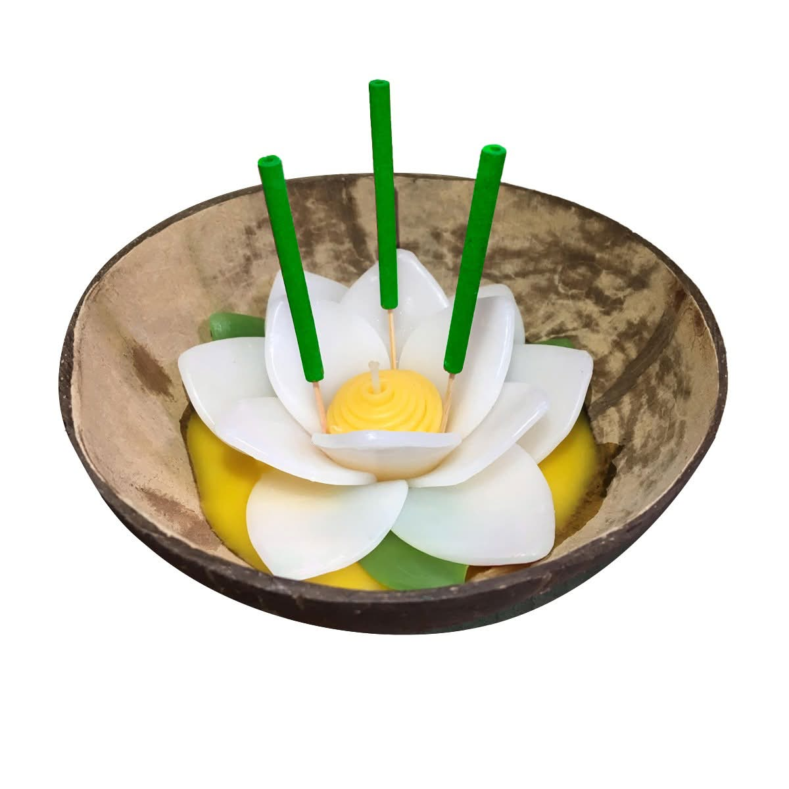

ประเพณีวันลอยกระทง
ปกติแล้ว หอเทวาลัยกลางสระน้ำบริเวณคณะสถาปัตยกรรม ถือเป็นหนึ่งในสถานที่ที่งดงามติดอันดับต้น ๆ ของมหาวิทยาลัยร่มนารี ซึ่งจะเปิดให้ขึ้นไปชมวิวได้เพียงปีละครั้งในวันจบการศึกษาเท่านั้น แต่ในโอกาสพิเศษนี้ ทางมหาวิทยาลัยได้เปิดให้บุคคลภายนอกเข้าชมฟรี เพื่อร่วมชื่นชมบรรยากาศกระทงเทียนในสระน้ำ

ตั้งแต่เวลา 17.00 น. เป็นต้นไป ภายในงานยังอัดแน่นไปด้วยความครึกครื้นจากร้านค้าและร้านอาหารชื่อดังจากภายนอกมหาวิทยาลัย พร้อมด้วยซุ้มเกมปาโป่งและกิจกรรมสนุก ๆ อีกมากมายที่รอต้อนรับทุกท่าน ขอเชิญชวนทุกคนมาร่วมสัมผัสบรรยากาศสุดพิเศษ และขอให้ค่ำคืนนี้เป็นช่วงเวลาแห่งความสุขและความทรงจำที่ดีสำหรับทุกคน